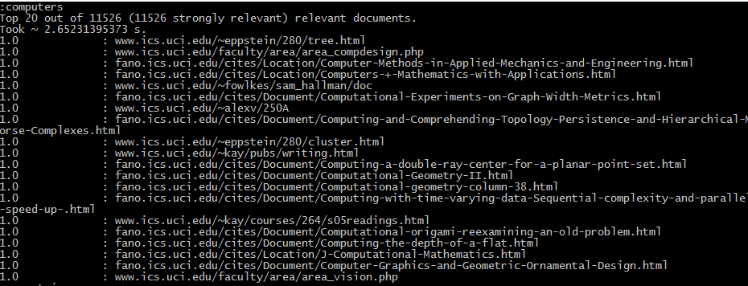
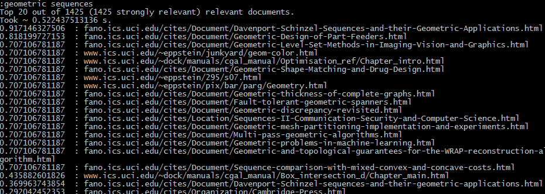

Development
Space-Time was made in Python 2.7, with the help of NLTK, BeautifulSoup, and Python Magic. The document data was stored in Sqlite3 databases, built with SQLiteStudio.There are four primary parts to this search engine: indexing, preloading (optional), ranking, and searching.
The indexing is performed once, before the program is used. This consists of opening and reading every single document, parsing the html via BeautifulSoup, getting unique words and their frequencies, and finally storing those counts along with any extra data into a database. The indexer uses inverted indexing, and ignores stop words, and other unwanted strings (hex, numbers, or different languages) with the help of regular expressions and NLTK. NLTK is also used to stem words, so that words like "computer" and "computers" are considered the same. The indexer also ignores certain file types like audio, video, and images with the help of Python Magic. Finally, the indexer gives higher weight to terms in the strong tag, or in headers and titles.

This is a part of the inverted index database. Some of the terms are cut off, via stemming, and are mapped toa folder and file- the documents. Alss stored are the frequencies, strong frequencies (how often the term appears in strong tags or headers), and finally the normalized weights.

This is another part of the inverted index database. Here, the terms are mapped to their document frequencies, or how many documents this term appears in.
Once the indexing is complete, you can run the search engine and perform searches, OR you can choose to preload some data. Preloading data will calculate some necessary data before running searches, to improve performance at the cost of extra space usage. This includes calculating document frequencies, and the tf-idf weights.
The next two parts go hand-in-hand. To search for a term, the user simply types in whatever search terms into the command line. The search engine parses the search query, and again ignores stop words via NLTK. Then, the engine passes the parsed query to the ranker, which will rank the query and its terms against every document in the database. It calculates a normalized tf-idf weight for query, and compares it to every document via Cosine similarity. It finally returns the top K documents.
The search engine returns a list of url links, along with their scores. It also shows how many relevant documents there were, and how many strongly-relevant (i.e. if the score was higher than some threshold). Finally, it also shows how long it took to get the documents. The final part is especially important, as the time elapsed and relevancy of the top K results were used to determine how effective the search engine was.

Searching "computers." You can see the top 20 out of 11,526 documents, and that the search took around 2.6 seconds. You can see the scores on the left-hand side, all of which are 1.0- which makes sense as the documents are all computer related in the ics.uci.edu domain.

These are the results for the query "geometric sequences." Here, you can see a variety in scores.

Results for the query "dogs in park." The results have a very low score. Clearly, the documents in the ics.uci.edu domain don't really talk about dogs in parks.
Closing Thoughts
As you can see from the images, this search engine isn't perfect. There is still much room to grow and improve on. There are numerous, more complex algorithms and theories that can be utilized to improve the relevancy of the top K results. However, for the purposes and scope of the course, this search engine worked perfectly well. It was able to (most of the time) get very relevant results for queries, and in a reasonable time. All in all, I'm quite happy with how it turned out.